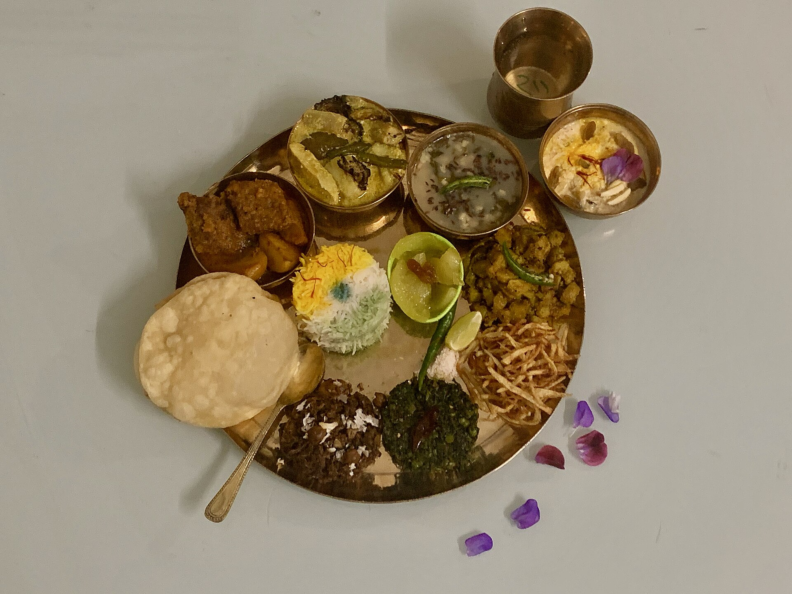

Featured note

A Bengali table is more than a meal — it is a way of welcoming you home.
Rice, dal, vegetables, bhaja, fish or meat, chutney and something sweet at the end: Bengali meals are built around variety, rhythm and the pleasure of eating slowly. That generous, home-style spirit is one of the nicest parts of travelling through Bengal.
Read our food inspiration
Featured photograph by Zoshua Colah on Unsplash.